Captura por foto, PDF, XML o WhatsApp
Boletas y facturas desde la web, la app Android con modo sin conexión, el asistente de WhatsApp, correo o tarjeta corporativa, incluyendo XML tributario y códigos QR/PDF417.
Del comprobante al pago sin digitar: el colaborador fotografía la boleta, Veneti lee los datos, las políticas y validaciones revisan el gasto, y el informe avanza por el flujo de aprobación hasta tesorería y contabilidad. En web, app Android y WhatsApp.
cuentaclara.integralflex.clParte de IntegralFlex Suites
Rindex Pro, antes CuentaClara, es la plataforma de rendición de gastos de IntegralFlex Suites. El colaborador sube una boleta, factura, PDF o XML tributario, o simplemente toma una foto desde la web, la app Android o WhatsApp. El motor OCR y el asistente Veneti extraen proveedor, RUT, folio, fecha, monto e impuesto, sugieren la categoría y el centro de costo, y piden revisión manual cuando un campo no es confiable.
Los gastos se agrupan en informes que avanzan por un flujo de aprobación configurable: jefatura directa, gerencia, aprobador especial para montos altos y contabilidad, con SLA y escalamiento por etapa. Antes de gastar, el colaborador puede pedir una autorización previa que reserva presupuesto, solicitar un fondo o caja chica, o calcular y pedir viáticos con anticipo.
La administración define políticas con topes, cuentas contables e impuestos, 25 validaciones restrictivas o de advertencia, presupuestos por área, centro de costo o proyecto, y tarifas de viático. Excepciones detecta boletas duplicadas y gastos de riesgo, Banco concilia movimientos de tarjetas prepago, y Pagos arma la nómina para tesorería. Es multiempresa: cada dominio de Microsoft 365 dirige a su empresa, con datos aislados.
Boletas y facturas desde la web, la app Android con modo sin conexión, el asistente de WhatsApp, correo o tarjeta corporativa, incluyendo XML tributario y códigos QR/PDF417.
Lee proveedor, RUT, folio, fecha, monto e impuesto, sugiere categoría y centro de costo, procesa en segundo plano y aprende de las correcciones de los usuarios.
Gastos por estado (borrador, enviado, aprobado, pagado, observado) con alertas de reglas, y agrupación en informes para enviarlos a aprobación.
Agente de IA que categoriza gastos, sugiere cómo agruparlos en informes por fecha, faena o política y marca faltantes, duplicados y datos por revisar.
Solicitud de autorización antes de comprar, en varias monedas, que valida la disponibilidad presupuestaria y reserva el compromiso.
Fondos asignados y por rendir, saldo disponible del colaborador, solicitud de fondos con fecha de cierre y cierre contra informe.
Cálculo de días, noches, alojamiento y transporte con tarifas nacional, faena e internacional, anticipo solicitado, kilometraje por km y destinos frecuentes.
Etapas jefatura directa, gerencia, aprobador especial para fondos altos y contabilidad, con SLA, aviso previo, escalamiento y delegaciones temporales.
Categorías con tope, cuenta contable, tratamiento de IVA, moneda, usuarios y palabras clave para clasificar automáticamente.
Reglas restrictivas o de advertencia sobre adjuntos, antigüedad, montos, RUT, tipo de documento, categoría, fondo e informe, con el mensaje que verá el rendidor.
Detección de boletas repetidas, datos incompletos, gastos con puntaje de riesgo y movimientos bancarios sin rendir.
Conectores para Mercado Pago, Tenpo y webhooks o API bancaria para importar movimientos de tarjetas y conciliarlos con las boletas.
Nómina por fecha para tesorería con rendiciones aprobadas, registro de pago, referencia y comprobante.
Vista consolidada de gastos, informes, excepciones, pagos, fondos y banco, más un checklist de calidad con puntaje de la operación.
Exportación a CSV para contabilidad y Power BI, plantillas de exportación personalizadas y API JSON.
Empresas aisladas por dominio corporativo, inicio de sesión y sincronización de usuarios con Microsoft 365, roles, verificación en dos pasos y auditoría.
Pantallas reales del sistema con datos de demostración: los nombres de personas, empresas y correos son ficticios.
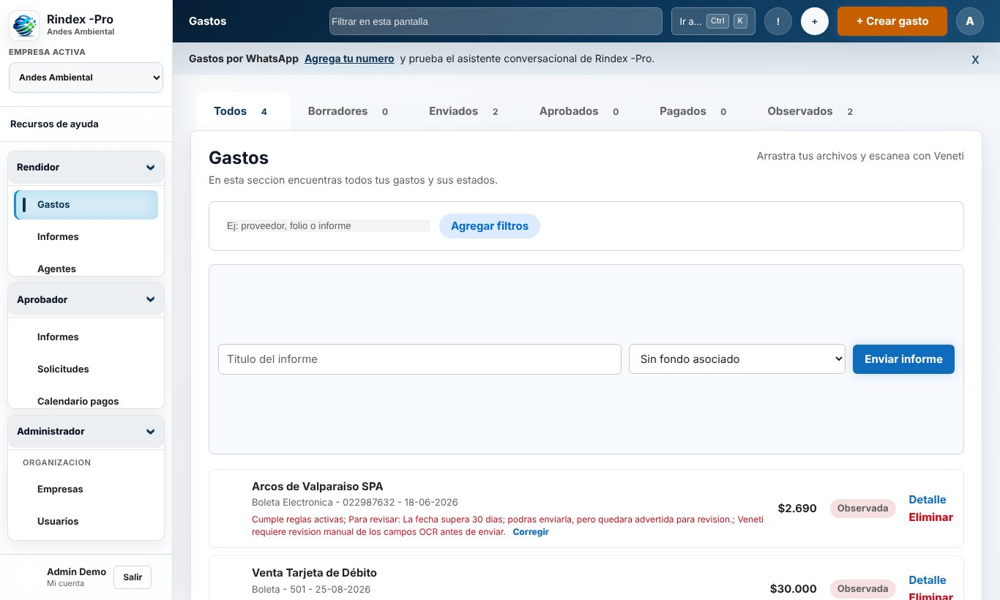
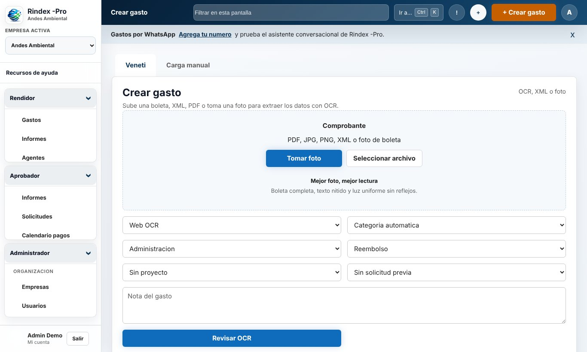
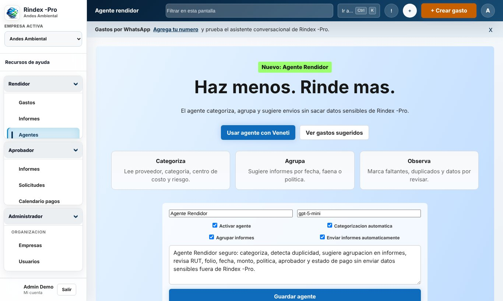
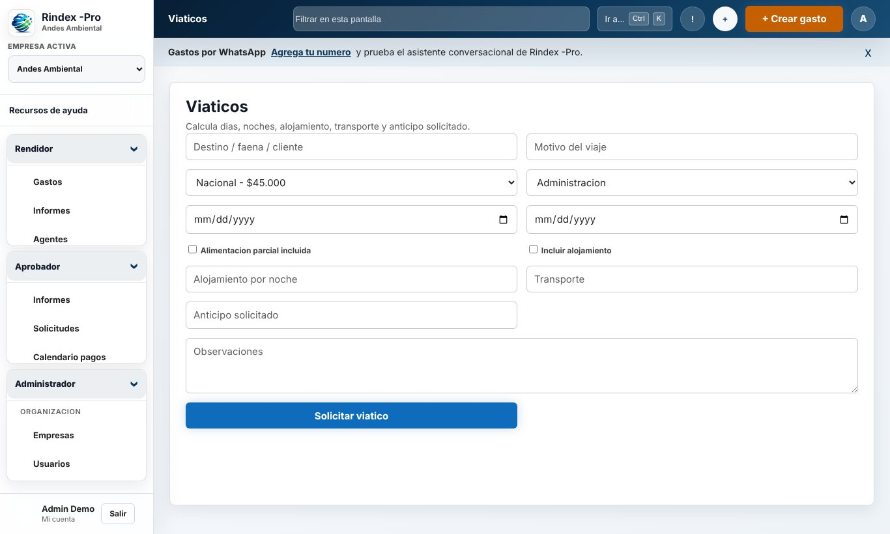
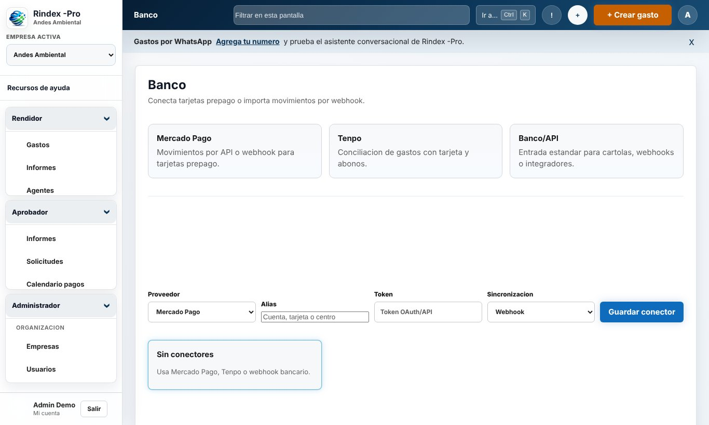
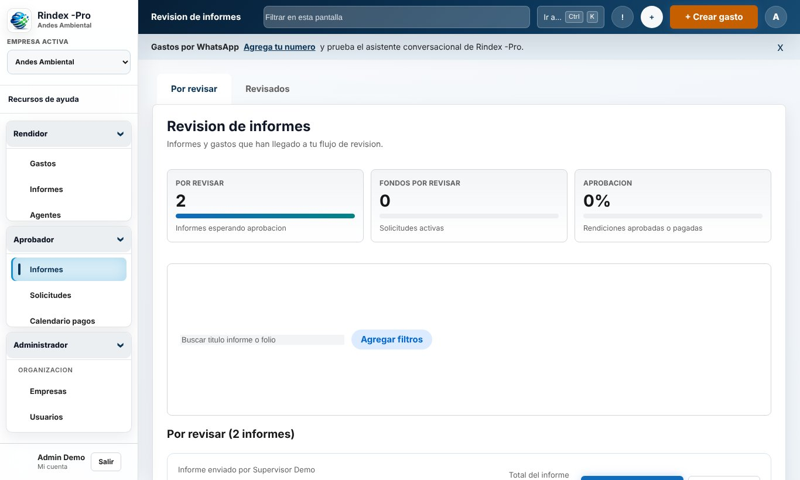
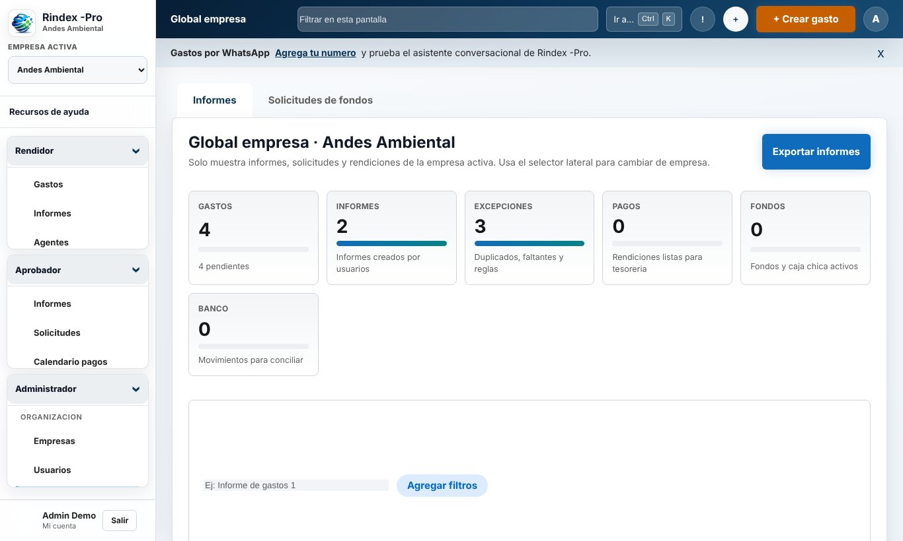
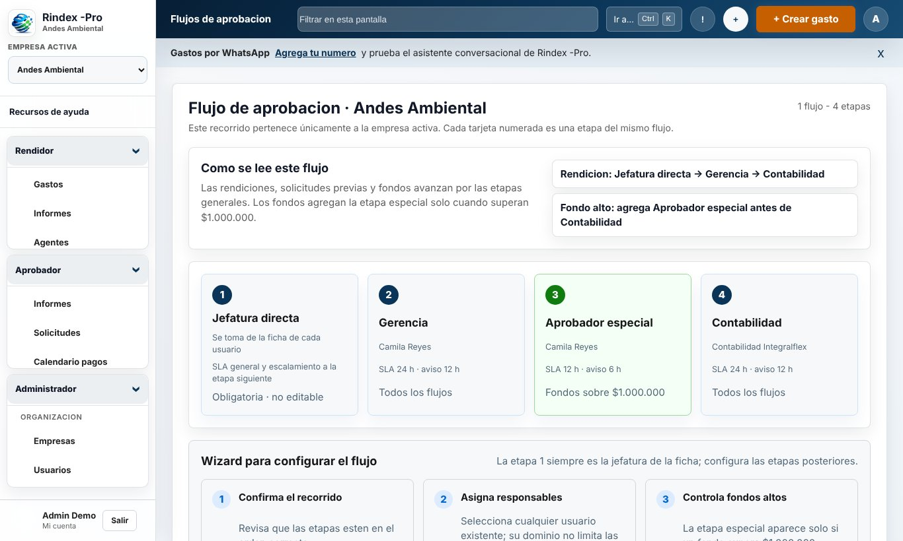
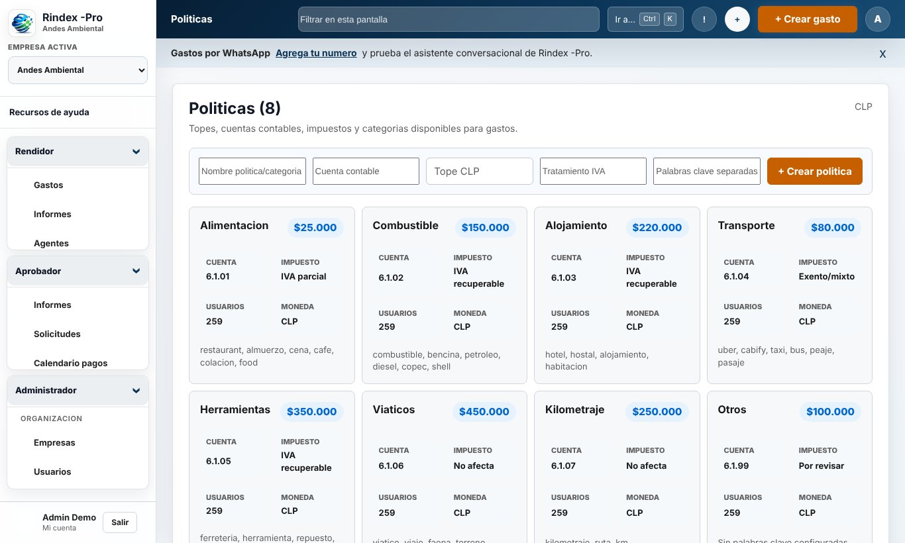
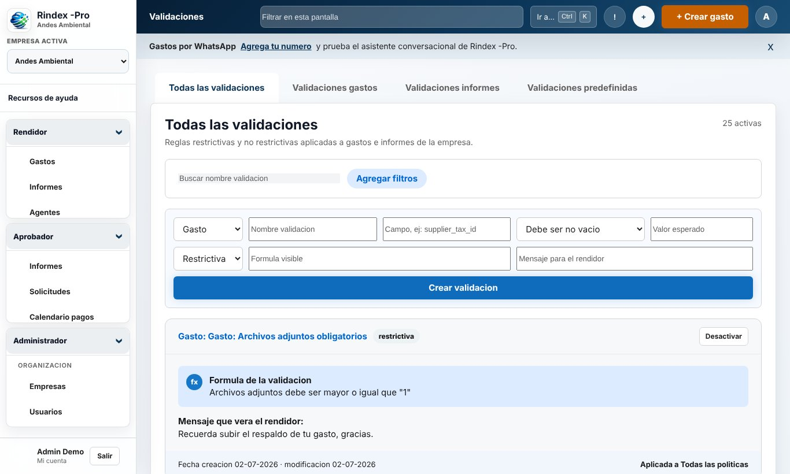
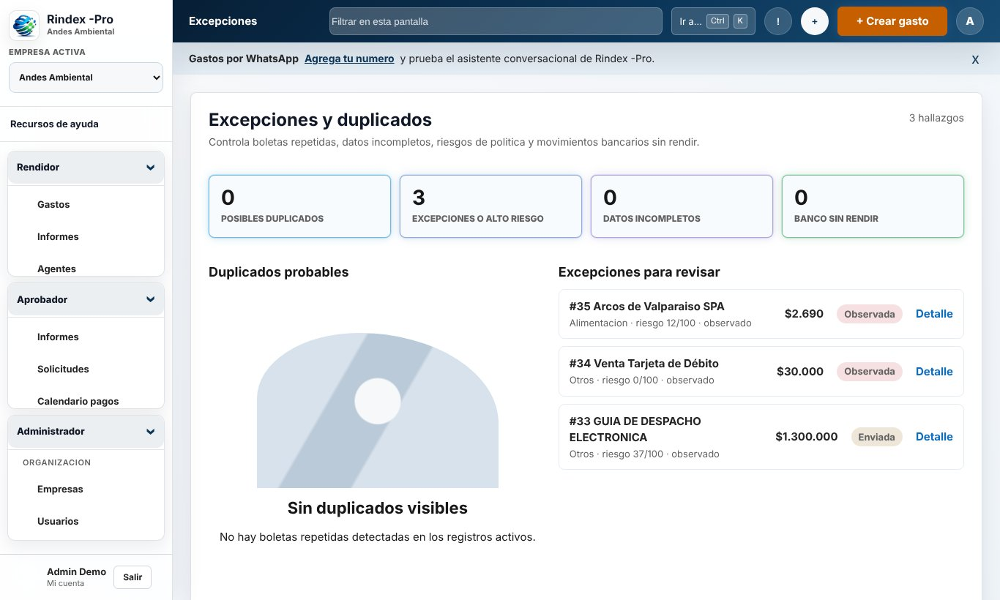
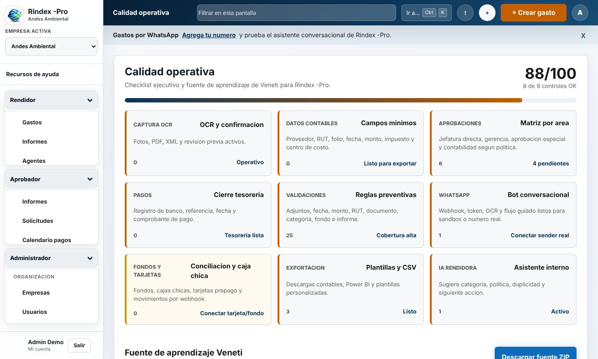
El colaborador fotografía la boleta o la envía por WhatsApp; Veneti lee y clasifica el gasto.
Políticas, validaciones y presupuesto revisan el gasto y avisan antes de enviarlo.
Los gastos se agrupan en un informe, solo o con ayuda del Agente Rendidor.
El informe pasa por jefatura, gerencia, aprobador especial y contabilidad con SLA.
Tesorería paga desde el calendario y contabilidad exporta a su sistema o a Power BI.
Flask + PostgreSQL, web responsiva, app Android con sincronización sin conexión
OCR EasyOCR/PaddleOCR, asistente Veneti, Agente Rendidor y bot de WhatsApp
Microsoft 365, WhatsApp, Mercado Pago, Tenpo, webhooks bancarios, CSV y API JSON
Empresas aisladas, roles, verificación en dos pasos y auditoría de eventos
Desde USD 6,9 por usuario al mes según el tamaño de tu equipo. Cotiza en línea o escríbenos y coordinamos una demo con tus datos.